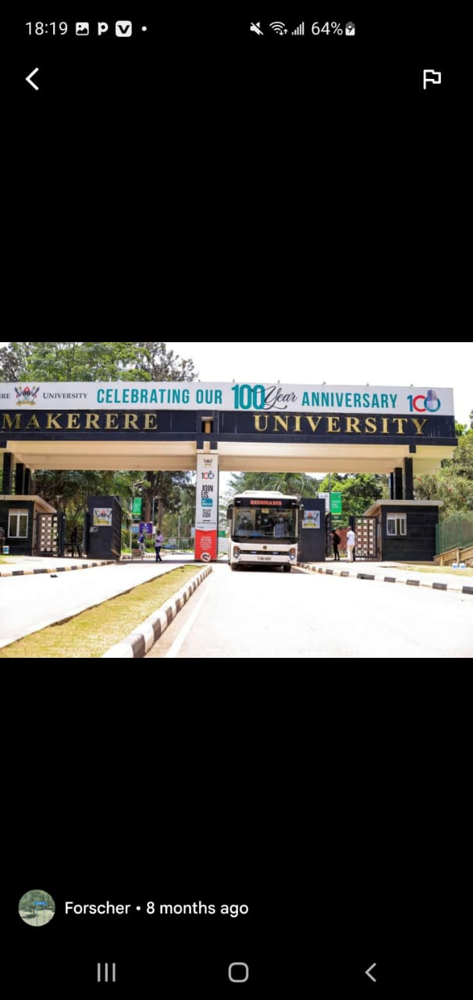
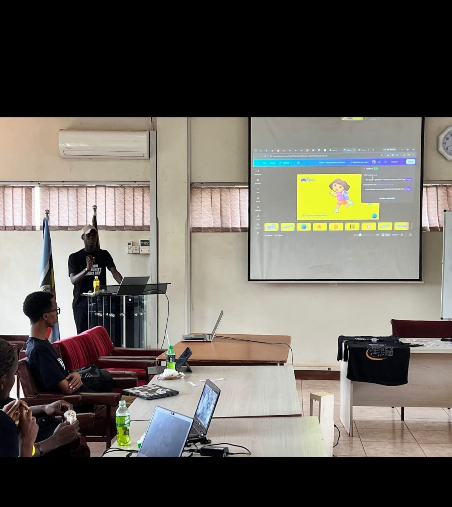

hello welcome to my personal blog!
this is a space where i share my experiences, learning journey, interests and ideas. i have a believe that every day offers an opportunity to learn something new, develop useful skills, and become a better version of ourselves.
though this blog, i hope to connect with people, share knowledge and inspire others to pursue their goals with confidence and determination.
thank you for visiting my page
I am a university student with a strong interest in technology, personal development and solving real world problems. i enjoy learning new things, exploring creative ideas and discovering how technology can make life easier
My academic journey is helping me develop skills in programming, database management, problem-solving and team work. i believe the education is not only about passing examinations but also about gaining knowledge that can be applied to real-life situations
I am always willing to learn, take on new challenges, and work towards becoming a skilled and responsible professional.

My journey in Information Systems And Technology is helping me understand how digital systems work and how they canbe used to solve everyday challenges.
I am particularly interested in programming, databases and data analysis. Learning these areas teaches me how to organise information, uild applications, and turn data into useful insights
Although learning technology can sometimes be challenging, i see every challenge as an opportuninty to improve.
My goal is to continue developing my technical skills and use them to create solutions that benefit individuals and communities.

My goal is to become a knowledgeable, innovative and responsible professional who uses technology to solve meanginful problems
I want to strengthen my programming and analyitical skills, gain practical experience and participate in projects that create positive change.
Beyond my academic success, i hope to develop leadership, communication and teamwork skills. i believe that success comes from consisteny, curiosity, hard work and the willingness to larn from mistakes.
My journey is still continuing and i look foward to the opportunities and lossons that lie ahead.
Out side my academic work, i value activities that help me grow, stay curious and understand the world around me.
some of the interests i enjoy exploring include technology, learning new skills, discovering innovative ideas and working with others. I also appreciate activities that encourage creativity, critical thinking and personal development.
I believe that maintaining a balance between learning, relaxation and social interaction is important for personal growth.
"Small steps every day lead to real achievements."
I believe that progress does not alway happen overnight. Every new skill learned, every challenge overcome and every lesson gained contributes tona better future.
My aim is to keep learning, stay focused on my goals and use my abilities to make a positive difference.
this is a textarea